UDN
Search public documentation:
LevelEditorUserGuideJP
English Translation
中国翻译
한국어
Interested in the Unreal Engine?
Visit the Unreal Technology site.
Looking for jobs and company info?
Check out the Epic games site.
Questions about support via UDN?
Contact the UDN Staff
中国翻译
한국어
Interested in the Unreal Engine?
Visit the Unreal Technology site.
Looking for jobs and company info?
Check out the Epic games site.
Questions about support via UDN?
Contact the UDN Staff
レベル エディタ ユーザー ガイド
ドキュメントの要約：「Unreal Engine」レベルエディタの使用ガイド ドキュメント変更ログ：作成者、更新者 Jeff Wilson。はじめに
Unreal レベル エディタは、UnrealEd のコア編集ツールです。これは、レベルのワールドが作成されるエディタにあります - BSP からビルドされるレベルと静的メッシュジオメトリ、テレインなどです。それらには、ライトや他のアクタ、AI パスノードやスクリプト化シーケンスを含んでいます。 本書では、レベル エディタインターフェースとレベルの作成方法の概要を説明していきます。レベル エディタの使用
このセクションでは、極めて基本的な事項を扱います。エディタの開き方および簡単なレベルの作成方法について解説していきます。エディタを開く
UnrealEd を開くとレベルエディタが開きます。詳細は、UnrealEd ユーザー ガイド をご覧ください。レベルの作成
簡単なレベルの作成の入門については、レベルを作成する をご覧ください。レベルエディタの概観
このセクションでは、次の3点について概説します。すなわち、レベルエディタのインターフェースを構成するコンポーネント。ビューポートを操作するのに使用されるコントロール。タスクをいっそう効率的に完成するためによく使用される特別なキー。エディタインターフェース
レベルエディタウィンドウは、それ自体でいくつかの部分に分かれています。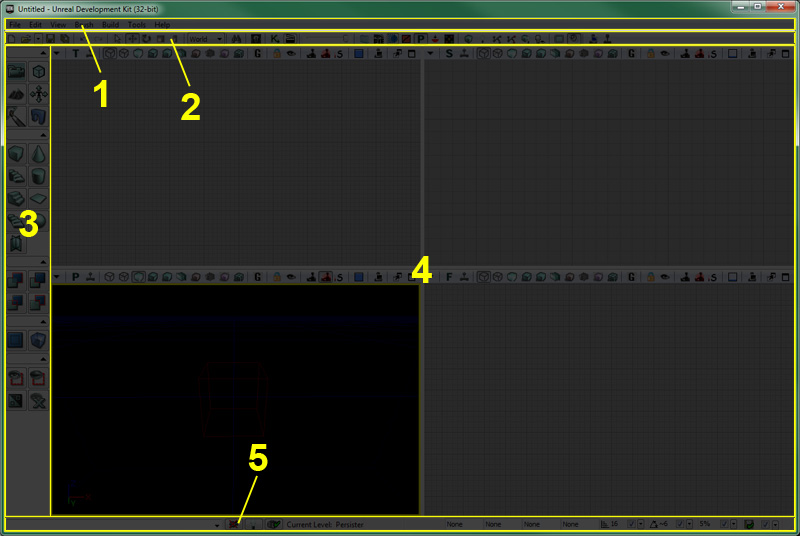
- メニューバー
- ツールバー
- ツールボックス
- ビューポート
- ステータスバー
メニューバー
レベルエディタ内にあるメニューバーは、これまでにWindowsのアプリケーションを使用したことがあれば、見慣れたものでしょう。メニューバーから使用できる数多くのツールとコマンドは、UnrealEdを使用してレベルの作成を進めていく際に必要となるものです。 メニューバーに関する詳細は、Editor Menu Barのページをご覧ください。ツールバー
このツールバーは、たいていのアプリケーションのものと同様、コマンドを集めたものです。それらのコマンドによって、一般的に使用されるツールおよびコマンドにすばやくアクセスすることができます。レベルエディタのメニュー内に含まれている項目の多くは、ツールバー内にもあります。 ツールバーに関する詳細は、Editor Tool Barのページをご覧ください。ツールボックス
ツールボックスには、次のような用途をもつツールが揃っています。すなわち、レベルエディタの現在のモードを制御するツール。ビルダーブラシを再形成するツール。新たなBSPジオメトリおよびBSPボリュームを作成するツール。可視性およびアクタの選択をビューポート内で制御するツール。 ツールボックスに関する詳細は、Editor Toolboxのページをご覧ください。ビューポート
レベルエディタのビューポートは、UnrealEdで作成するワールドを見るためのウィンドウです。複数の正投影図（上面、側面、正面）と1つの透視図の表示が得られるため、見えるものとその見え方を完全に制御することができます。 ビューポートに関する詳細は、Viewport Tool Barのページをご覧ください。 UnrealEdの各種ビューモードに関するガイドについては、View Modesのページをご覧ください。 各種フラグ表示に関するガイドについては、Show Flagsのページをご覧ください。コントロール
ビューポート操作用コントロール、および、キーボードのコントロール、ホットキー（ショートカットキー）を覚えると、長期的には、仕事量を減らし、時間を節約することにつながります。マウス コントロール
マウス コントロールのリストについては、 エディタの参照 をご覧ください。キーボードコントロール
キーボードコントロールのリストについては、 エディタの参照 をご覧ください。ホットキー
エディタホットキーのバインドや新しいエディタホットキーコマンドの作成方法についての概要は、エディタホットキー をご覧ください。レベルの操作
レベルの作成プロセスは、つきつめると次のような必須タスクからなります。それは、アクタの配置、アクタの選択、アクタの変形、アクタの修正です。換言すると、レベルを作成するには次のことが必要となります。すなわち、アクタをマップ内に配置し、動き回らせることによって環境を作成し、アクタのプロパティを修正することによってアクタが適切に見えたり動作するようにさせます。アクタの配置
各マップは、白紙状態からスタートします。目指すべき環境を構築したり、ワールドに人を住まわせるには、アクタがマップ内に配置されなければなりません。そのための方法はいくつかありますが、どの方法でも最終的には、クラスが作成されて、そのクラスの新たなインスタンスとなります。このインスタンスは、その後、動き回るようにできたり、プロパティを修正することができるようになります。 以下では、新たなアクタをマップに配置するためのさまざまな方法に関して、その詳細を説明します。コンテントブラウザから
ある種類のアセットは、コンテントブラウザで選択し、適切な種類のアクタの新たなインスタンスに割り当てることが可能です。そのためには、ビューポートのうちのどれか1つで右クリックして、Add Actor >（アクタを追加する）を選択します。これによって、フライアウトメニューが表示され、選択されたアセットを使用して追加できるアクタの種類がリスト表示されます。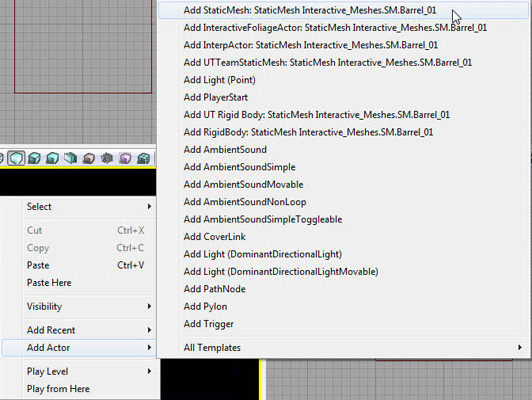
アセットが正しくロードされていない場合は、アセットをロードするための選択項目が、フライアウトメニューの最下部に表示されます。この選択項目を選ぶと、アセットがロードされるとともに、追加できるアクタの種類に関する項目が、フライアウトメニューに表示されるようになります。
 コンテントブラウザからマップ内に配置できるアセットの種類は次のようになります。
コンテントブラウザからマップ内に配置できるアセットの種類は次のようになります。
- 静的メッシュ
- 骨格メッシュ
- 物理面アセット
- 破砕メッシュ
- パーティクルシステム
- スピードツリー
- サウンドキュー
- サウンドウェーブ
- レンズフレア
ドラッグアンドドロップ
特定の種類のアクタは、ビューポートのコンテクストメニューを通じて、コンテントブラウザからマップに追加できますが、それ以外にも方法があります。コンテントブラウザからアセットをドラッグし、アクタを配置したい場所のビューポートの1つにドロップするのです。このような方法をとる場合、カーソルが変化するので、その種類のアセットがビューポートにドロップできることが分かります。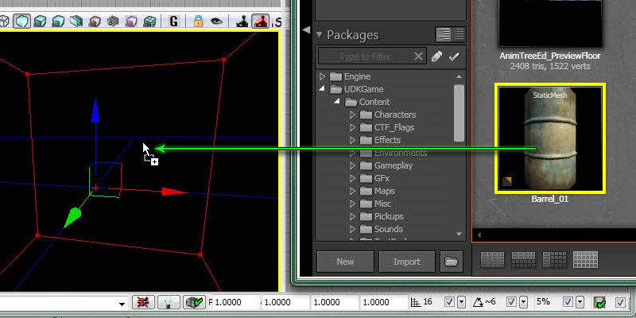
コンテントブラウザからアセットをドラッグアンドドロップすると、次のような種類のアクタが、それに関連する種類のアセットのために作成されます。- 静的メッシュ － StaticMeshActorを配置
- 骨格メッシュ － SkeletalMeshActorを配置
- 物理面アセット － KAssetを配置
- 破砕静的メッシュ － FracturedStaticMeshActorを配置
- パーティクルシステム － Emitterを配置
- スピードツリー － SpeedTreeActorを配置
- サウンドキュー － AmbientSoundを配置
- サウンドウェーブ － AmbientSoundSimpleを配置
- レンズフレア － LensFlareSourceを配置
アクタブラウザから
ドラッグアンドドロップによる方法は、極めて効率的かつ容易ですが、アクタの種類のうち特定のものにしか有効ではありません。ありとあらゆる種類の配置可能なアクタ（アクタブラウザで太字で示されるアクタ）を、マップに追加するには、次のようにします。アクタブラウザ内でアクタのクラスを選択し、ビューポートの1つで右クリックし、Add New ある種のアクタの中には、レベル内に配置する際、特定の種類のアセットをコンテントブラウザ内で選択しなければならないものもあります。通常、それらのアクタは、コンテントブラウザを通じてマップ内に簡単に配置することができる最初のアクタと同じ種類のものです。コンテントブラウザ内で適切な種類のアセットが選択されていない場合は、ユーザーに通知メッセージが表示されます。
ある種のアクタの中には、レベル内に配置する際、特定の種類のアセットをコンテントブラウザ内で選択しなければならないものもあります。通常、それらのアクタは、コンテントブラウザを通じてマップ内に簡単に配置することができる最初のアクタと同じ種類のものです。コンテントブラウザ内で適切な種類のアセットが選択されていない場合は、ユーザーに通知メッセージが表示されます。


アクタの選択
アクタの選択は、極めて簡単なものですが、レベル編集プロセスにおいては、非常に重要なものです。正しいアクタのグループを素早く選択できないと、プロセスが停滞し、生産性が低下します。アクタおよびアクタのグループを選択する方法は、多数あります。それぞれの詳細について、以下で解説していきます。シンプルな選択方法
アクタを選択する最も基本的な方法は、ビューポート内でアクタを単に左クリックするというものです。アクタ上でクリックするたびに、現在選択されているアクタを選択解除し、新たなアクタを選択することになります。新しいアクタをクリックしながらコントロールキーを押下すると、この新たなアクタを選択に追加することになります。 このようにして、複数のアクタを選択し、これらのアクタをグループとして移動させることができるようになったり、選択されたアクタすべてに共有されているプロパティを、プロパティウィンドウ内で修正できるようになります｡ この方法は、少数のアクタを選択したり、マップに分散している孤立したアクタをいくつか選択する場合には有効となりますが、多数のアクタを選択するには時間がかかり、単調な方法となってしまいます。
このようにして、複数のアクタを選択し、これらのアクタをグループとして移動させることができるようになったり、選択されたアクタすべてに共有されているプロパティを、プロパティウィンドウ内で修正できるようになります｡ この方法は、少数のアクタを選択したり、マップに分散している孤立したアクタをいくつか選択する場合には有効となりますが、多数のアクタを選択するには時間がかかり、単調な方法となってしまいます。
マーキーによる選択方法
マーキーによる選択を行えば、特定のエリア内に存在するアクタのグループを素早く選択および選択解除できます。この選択方法では、選択領域を指定する枠を作ります。それには、複数のキーを組み合わせて押下し、マウスボタンの1つをクリックし、マウスカーソルをドラッグします。指定枠内にあるアクタはすべて、押下されているキーの組み合わせとマウスボタンにしたがって、選択もしくは選択解除されます。 以下は、キーの可能な組み合わせとその効果です。
以下は、キーの可能な組み合わせとその効果です。
- Ctrl + Alt + LMB（左マウスボタン） － 現在選択されているものを、指定枠に含まれるアクタに置き換えます。
- Ctrl + Alt + Shift + LMB － 指定枠に含まれるアクタを、現在の選択に追加します。
- Ctrl + Alt + Shift + RMB（右マウスボタン） － 指定枠内で選択されているアクタを、現在の選択から削除する。
クラスによる選択 / アセットによる選択 / プロパティによる選択
これらの選択タイプでは、次にあげるものに基づいて、アクタのグループを選択できます。すなわち、アクタのクラスに基づいて、特定のアセットの使用に基づいて、特定のプロパティの特定の値を保持しているということに基づいて、です。クラスまたはアセットによる選択の場合は、アクタがすでに選択されている必要があります。また、プロパティによる場合は、プロパティと値がすでにアクティブになっている必要があります。これらの選択は、ビューポートのコンテクストメニューから実行できます。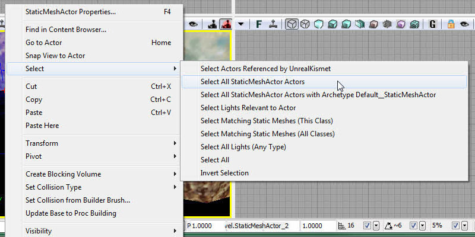
アクタの変形
アクタの変形とは、アクタの移動、回転、スケーリングのことです。当然のことながら、これは、レベル編集プロセスにおいて極めて多くの部分を占めます。レベルエディタ内でアクタを変形するには、2つの基本的な方法があります。手作業による変形
最初の方法は、プロパティウィンドウ内で手作業で値を変更させるものです。あらゆるアクタに関する重要な変形プロパティは、プロパティウィンドウ内でアクセスできます。このウィンドウは、Movement（移動）セクション（Location and Rotation（位置と回転））、および、Display（表示）セクション（Draw Scale and Draw Scale 3D（スケール描画とスケール描画3D））の下に置かれています。この方法をとることによって、アクタの配置および方向、サイズを最も微細に調整できますが、直感的な操作からは程遠いため、値を変更しながら試行錯誤を何度となく繰り返さなければならないことも頻繁に起こります。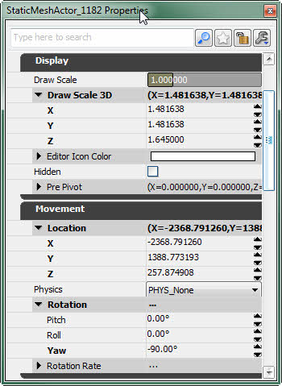
インタラクティブな変形
第2の方法は、ビューポートで表示されるビジュアルツールを使用するものです。このツールを使用することによって、ビューポート内でインタラクティブに直接マウスでアクタを移動、回転、スケーリングできます。これによって生じる利点と欠点は、手作業による方法による場合と正反対のものです。この方法は極めて直感的に使用できますが、一方で、ある種の環境において必要となるような正確さからはほど遠いものです。この点については、ドラッググリッドおよび回転グリッド、スケーリンググリッドが役立ちます。既知の値や増分にスナップできる機能によって、より正確な制御ができるように配慮されているからです。 この方法では、変形を実行するときに使用したい参照座標系を選択することもできます。つまり、ワールド空間でワールド軸に沿ってアクタを変形することもできれば、アクタ自身のローカル空間でローカル軸に沿って変形することもできるということです。これによって、非常に柔軟性が増すとともに、手動で値を単に設定する方法ではほとんど不可能であったことができるようになります。少なくとも、大量の複雑な計算から始めなくても済むようになります。
 ビューポートでアクタを処理するために使用されるビジュアルツールは、変形ウィジェットとして知られています。通常、変形ウィジェットは、いくつかのパーツから構成され、それらのパーツは有効となる軸にしたがって色分けされています。赤は、X軸が影響を受けることを意味します。緑は、Y軸が影響を受けることを意味します。青は、Z軸が影響を受けることを意味します。どのような変形が望ましいかによって、いくつかの形態をとります。以下に、その概略を説明します。
ビューポートでアクタを処理するために使用されるビジュアルツールは、変形ウィジェットとして知られています。通常、変形ウィジェットは、いくつかのパーツから構成され、それらのパーツは有効となる軸にしたがって色分けされています。赤は、X軸が影響を受けることを意味します。緑は、Y軸が影響を受けることを意味します。青は、Z軸が影響を受けることを意味します。どのような変形が望ましいかによって、いくつかの形態をとります。以下に、その概略を説明します。
平行移動ウィジェット
平行移動ウィジェットは、色分けされた矢印のセットから構成されいて、これらの矢印は、ワールドにおける各軸の正方向を指しています。これらの矢印はそれぞれ、本質的にはハンドルです。このハンドルは、つかんで（ハンドル上で左クリック）、ドラッグすることができ、こうすることによって、選択したアクタ（複数可）を特定の軸に沿って移動させることができます。ハンドルのどれかにマウスカーソルを置くと、カーソルが変化するとともに、ハンドルが黄色に変わります。このことは、クリックしてドラッグすると、オブジェクトを軸に沿って移動させることになる、ということを示しています。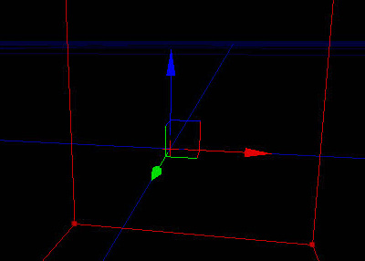
また、各ハンドルからは、他のハンドルの方向に沿って線が出ています。この線は、それぞれお互いとぶつかります。これによって、各平面（XY、XZ、YZ）上に正方形が作られます。これらの正方形のどれかの上でマウスをクリックし、ドラッグすると、アクタがその平面に沿って移動します。この動きは、基本的に、その平面を構成する2つの軸方向に制限されます。ここでも、正方形のどれかにマウスカーソルを置くと、カーソルが変化するとともに、この正方形に関係するハンドルが黄色に変わります。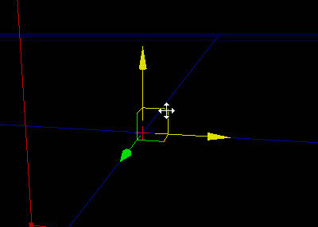
回転ウィジェット
回転ウィジェットは、3つの色分けされた円のセットです。それぞれの円は、軸に関連づけられています。これをつかんでドラッグすると、選択したアクタ（複数可）が、円に関連する軸を中心にして回転します。回転ウィジェットの場合、関係する円によって影響を受ける軸は、その円自体に対して垂直な軸です。すなわち、XY平面と同一平面上にある円は、実際にZ軸を中心にしてアクタを回転させます。平行移動ウィジェットの場合と同じように、ある円の上にマウスカーソルを置くと、カーソルが変化するとともに、円が黄色に変わります。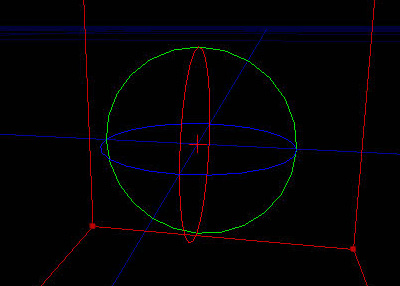
均等なスケーリングウィジェット
均等なスケーリングウィジェットは、3つのハンドルのセットです。これをつかんでドラッグすると、選択したアクタを、3軸方向に向かって同時に均等にスケーリングします。外見は、平行移動ウィジェットと似ていますが、各ハンドルの両端は、矢ではなく、小さな立方体になっています。また、ハンドルのいずれをつかんでも、軸すべてに影響が及ぶため、各ハンドルは、特定の軸に応じて色分けされてはおらず、すべて赤一色になっています。
不均等なスケーリングウィジェット
不均等なスケーリングウィジェットは、均等なスケーリングウィジェットとほぼ同一のものですが、次の点は異なります。すなわち、各ハンドルをつかんでドラッグした場合、それに関連する軸に沿ってのみ、選択したアクタがスケーリングされるという点です。そのため、ハンドルは、平行移動ウィジェットや回転ウィジェットと同様の方式で色分けされています。また、このウィジェットでは、同時に2軸方向にスケーリングすることができます。これは、平行移動ウィジェットにおいて、平面に沿ってアクタを移動できるのとほぼ同じやり方です。
ディテールレベル（精度レベル）
「Unreal Engine 3」では、ディテールレベルを設定できます。これによって、マップ内にあるアクタは、エンジンのディテールレベルがそのレベル以下の場合にのみ表示されるようになります。これは、さまざまなハードウェア構成で正しく機能するレベルを作成する際、非常に有用なものとなります。アクタが、ディテールを上げるためだけに使用され、レベルのゲームプレーにはまったく必要ない場合は、最高のディテールレベルの場合にのみ表示されるように設定できます。アクタが、ゲームプレーに絶対欠かせない場合は、常に最低のディテールレベルに設定することによって、ユーザーのシステムの設定がどのようなものであっても、常時表示されるように設定できます。 アクタのディテールレベルを設定する方法は2つあり、そのどちらかを実行します。第1の方法では、ビューポートでアクタを選択し、選択したアクタを右クリックしてビューポートコンテクストメニューを開き、LOD Operations（LODの操作） > Set Detail Level（ディテールレベルの設定）と進み、low（低）、medium（中）、high（高）からディテールレベルを選択します。 第2の方法では、アクタを選択し、そのプロパティを開き、アクタのためのDetail Mode（ディテールモード）プロパティを探します。この第2の方法はやや扱いにくいのですが、その理由は、アクタの種類が異れば、このプロパティがアクタ内で常に同じ場所にあるとは限らないからです。ただし、必要であれば、プロパティウィンドウの検索機能を常時利用することによって、素早くプロパティを見つけることができます。
第2の方法では、アクタを選択し、そのプロパティを開き、アクタのためのDetail Mode（ディテールモード）プロパティを探します。この第2の方法はやや扱いにくいのですが、その理由は、アクタの種類が異れば、このプロパティがアクタ内で常に同じ場所にあるとは限らないからです。ただし、必要であれば、プロパティウィンドウの検索機能を常時利用することによって、素早くプロパティを見つけることができます。
 レベルエディタ内でアクタのディテールレベルを設定する以外にも、エンドユーザーの目にレベルがどのように映るかということについてもっとよく知るための方法があります。いずれのディテールモードにあっても現在のレベルをプレビューすることが可能なのです。それには、 View （ビュー）メニューの中にあるDetail Mode（ディテールモード）オプションを使用します。これには、 low （低）、 medium （中）、 high （高）の3つの選択モードがあります。これによってビューにフィルターがかかり、選択されたディテールモード以下のアクタだけが表示されるようになります。このメニューで low （低）を選択した場合、 low （低）に設定されたアクタのみが表示されます。このメニューで medium （中）を選択した場合、 medium （中）または low （低）に設定されたアクタが表示されます。以下同様です。
レベルエディタ内でアクタのディテールレベルを設定する以外にも、エンドユーザーの目にレベルがどのように映るかということについてもっとよく知るための方法があります。いずれのディテールモードにあっても現在のレベルをプレビューすることが可能なのです。それには、 View （ビュー）メニューの中にあるDetail Mode（ディテールモード）オプションを使用します。これには、 low （低）、 medium （中）、 high （高）の3つの選択モードがあります。これによってビューにフィルターがかかり、選択されたディテールモード以下のアクタだけが表示されるようになります。このメニューで low （低）を選択した場合、 low （低）に設定されたアクタのみが表示されます。このメニューで medium （中）を選択した場合、 medium （中）または low （低）に設定されたアクタが表示されます。以下同様です。
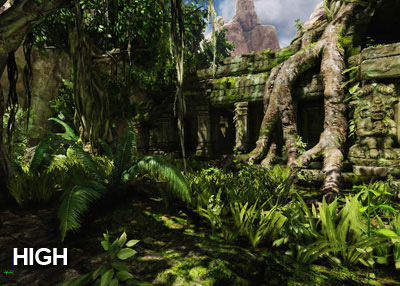
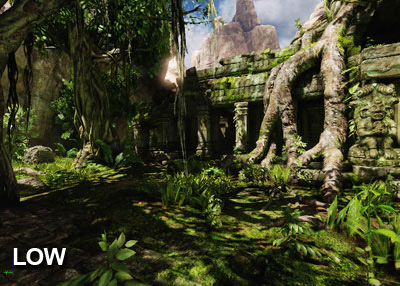
エディタのパフォーマンス
画面に多数のアクタが配置された大きなレベルでは特に、エディタが著しく遅くなることがあります。以下は、エディタのフレームレートを改善するために調整できる設定とその説明です。 シングルプレーヤーレベルの場合、最も優れた唯一のオプションとして Level Streaming Volume Previs (レベルのストリーミング ボリュームを表示可能にする) があります。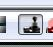
これにより 2、3 のストリーミングレベルだけ表示し、新しいレベルのストリーミング時にロードを遅らせます。 場合によってはすべてのレベルを表示する必要もあり、そのような場合には以下のオプションが便利です。- Distance to far clipping plane (後方クリッピング面までの距離)
- その名前が示すとおりで、便利で簡単な解決方法です。 [Redo] (やり直し) ボタンの横のスライダバーです。
- Turn off realtime update (リアルタイム更新をオフにする)
- 説明はその名前のとおりです。
- G mode (G モード)
- エディタのデバッグ情報をすべて非表示にします。結果は異なる可能性があります。
- Have lighting built (ライティングをビルドする)
- 常にビルドが可能であることはありませんが、ライティングがビルドされていなければエディタは非常に遅くなります。
- Unlit movement (movementをアンリット)
- 説明はその名前のとおりです。
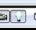
- Unlit view mode (アンリット表示モード)
- ライティングがビルドされていないときに役に立ちます。
- Show dynamicshadows (ダイナミックシャドウを表示)
- ライティングがビルドされていないときに役に立ちます。
- Show selection (選択項目を表示)
- この 表示フラグ はデフォルトでオンに設定されていて、選択した BSP が表示されることを意味します。選択されている BSP を表示する必要がない場合、これをオフにするとエディタは非常に速くなります。
- Show scene captures (シーンキャプチャを表示)
- これをオフにすると、キャプチャを使用するシーンの速度がかなり上昇します。